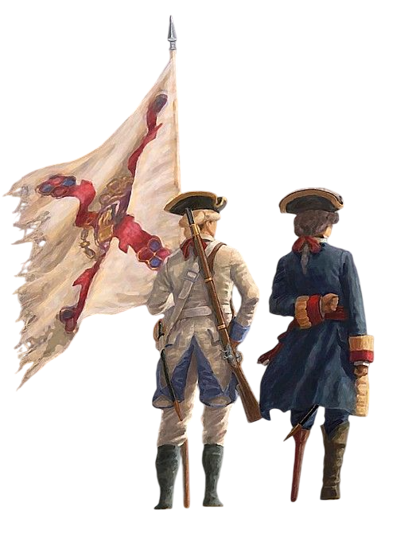
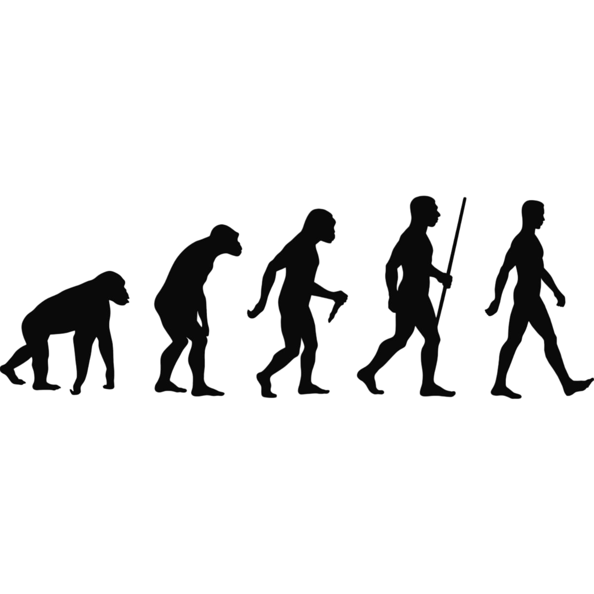

ANGEL EMMANUEL FIORENTIN ROQUEL ACUTA


Angel es un muchacho de hoy dia 17 de enero del 2026 18 años, en su vida a tenido
muchas experiencias distintas, ya que aunque su nombre sea Angel Roquel desde pequeño su familia y
amigos lo conocen y llaman FIORE dicho apodo fue puesto por su padre desde su
nacimiento ya lo llamaban de esa forma, es un muchacho bueno y educado que le gusta vivir nuevas
experiencias, Angel tambien es muy estudioso y aficionado a el coleccionismo y los carros.
Angel a
pasado por 3 colegios diferentes siendo Kinal su colegio actual y tercero, esta estudiando Informatica y
a punto de graduarse, Angel vive en casa de sus padres junto con sus hermanos, casa donde a vivido
muchos momentos inolvidables y ha pasado viviendo toda su corta vida, Angel es un amante al Futbol y a
desafiarse a si mismo y buscar los mejores retos.
Este año va a tener muchos retos entre el, pero las expectativas siempre son las mejores que son salir adelante, entregar tareas, aprender mas que el año 2025 y graduarme primero Dios, que es ya el mayor logro de la carrera.
Este año el estudio sera mi prioridad, y planeo dedicarle despues del colegio el mayor tiempo posible unas 6-8 horas aproximadamente teniendo en cuenta que despues del colegio llego a las 2 de la la tarde a mi casa y tengo ocupaciones en casa.
Planeo aprender de lleno el nuevo pensum de este año de sexto ya que todo es nuevo, no estria mal tener la habilidad de aprender nuevos lenguajes de programacion, tener la habilidad de dar buenas ideas y liderar un grupo de trabajo y tambien me gustaria tener la habilidad de reparar cosas encasa.